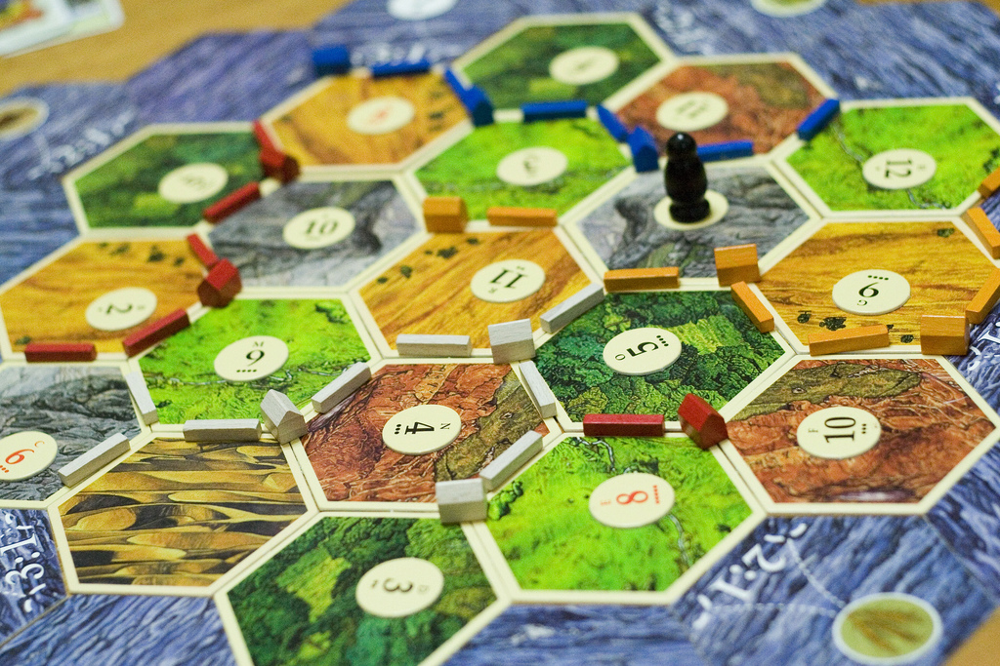
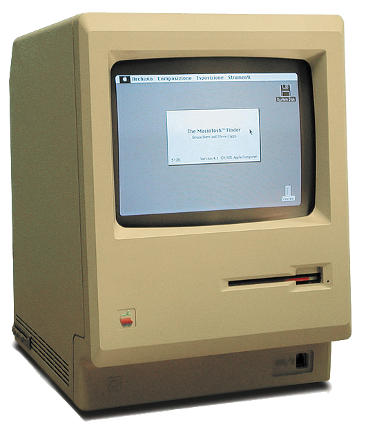
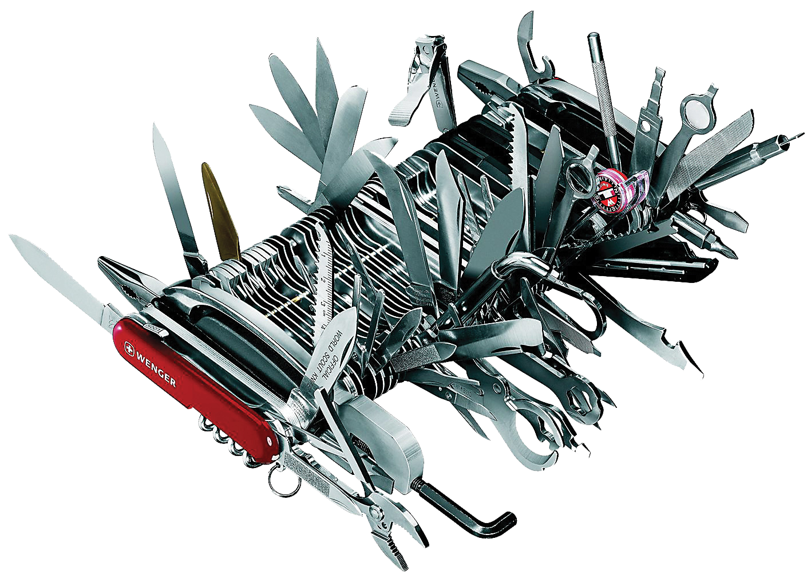
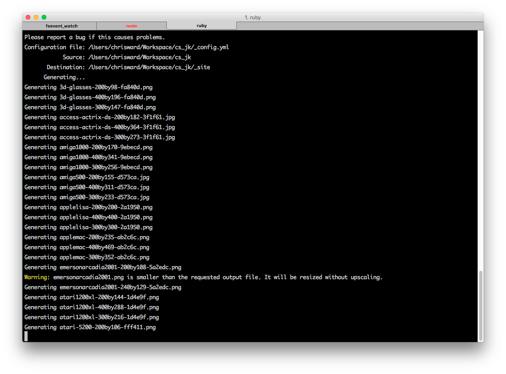
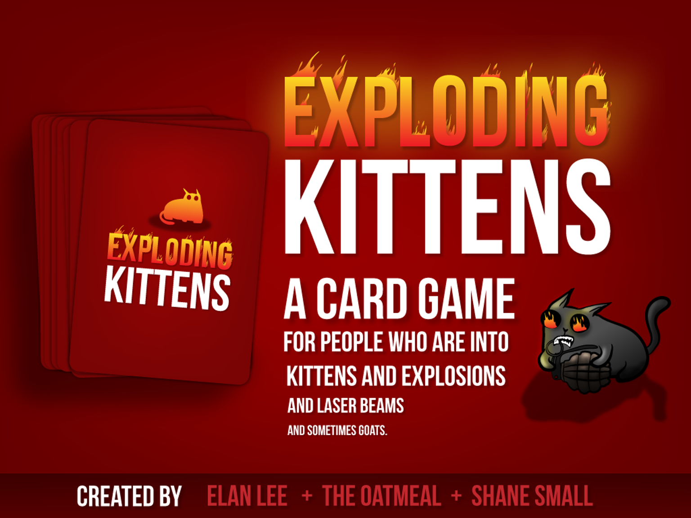
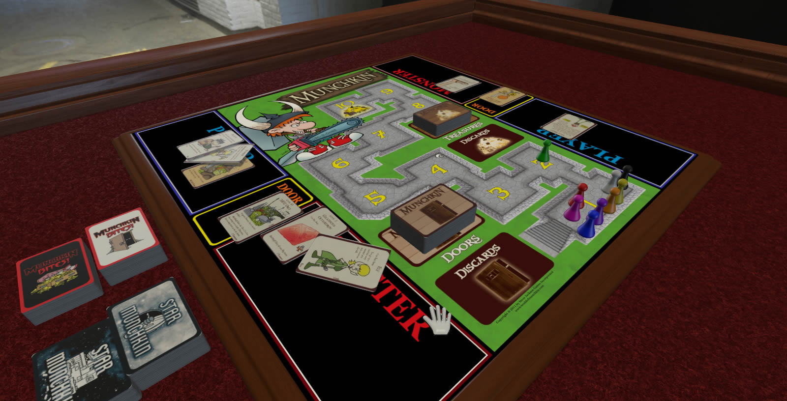

Why I Decided to Code a Boardgame
(and how tools written in obscure programming languages helped) @ChrisChinch
#chipshopbg
chipshopgame.com
Chip Shop
Build your Silicon Empire Release Date: Early 2016
Editions: Print-on-Demand, Premium, Digital
Players: 2-6
Launch Party: Computer Spiele Museum
The Aim
Awesome and Open
Base: 1980s America
Expansions: 70s, 90s, Japan, Europe
Community: User Contributed
Production: Open
Workflow
Write Once, Multi-FormatOpen: Everything
Markdown
The ContentDeveloper: John Gruber (& Aaron Swartz)
Skills: Clean, Perfect for Online, Focussed
Jekyll
The WebsiteDeveloper: Tom Preston-Warner
What: Static Site Generator
Skills: Easy, Light, Semi-Flexible
LaTeX
PrintDeveloper: Leslie Lamport (1985)
What: Word Processor / Markup Language
Skills: Clarity, Complex, Confusing
Pandoc
Swiss Army Knife Developer: John MacFarlane
What: Converter
Skills: Converts
Tying it Together
Automate Away Developer: Me!
What: Stops me Typing
Skills: Impresses Passers-by
Crowd-Funding
Funding & Promotion Positives: Test your Ideas, Popular Category
Negatives: Popular Category, Reality of Delivery
Digital Games
App, App Away
Positives: Solo play, Broaden Market
Negatives: Variable Quality, Defeats the Point?
Game Simulators
The Future of Cardboard? Positives: Play Testing, Global Groups
Negatives: Missing Rules, New Area
Thank you!
Writer, Developer, OtherChris Ward
chriswhward@gmail.com
@chrischinch